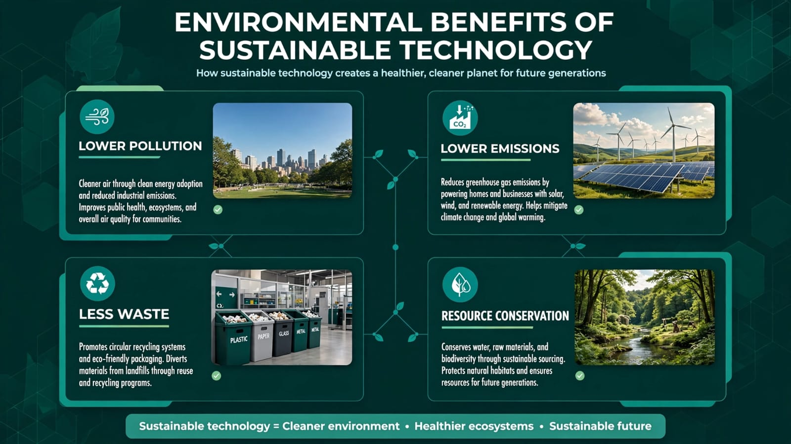
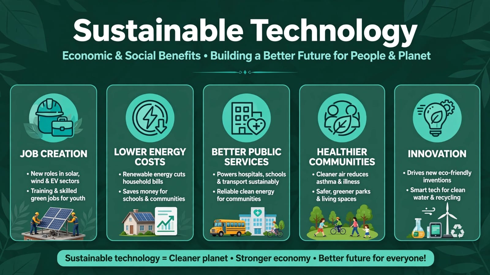
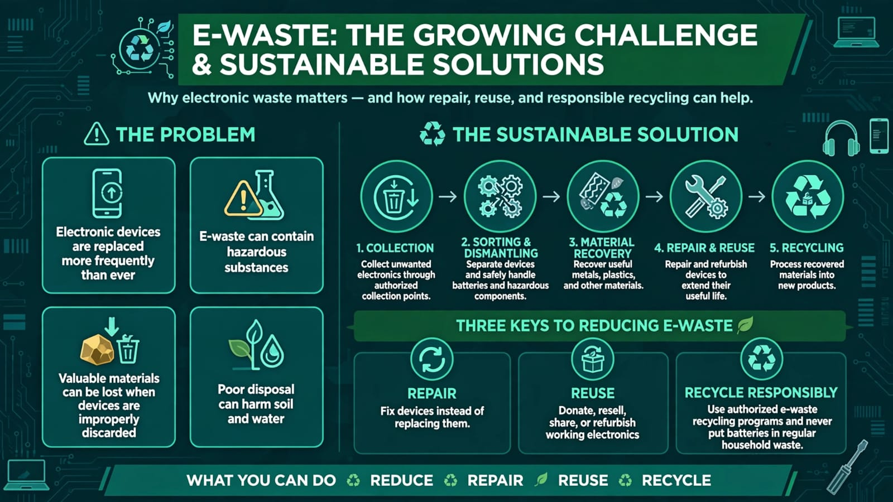
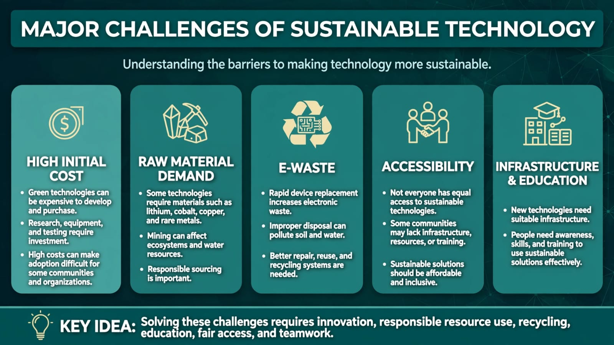
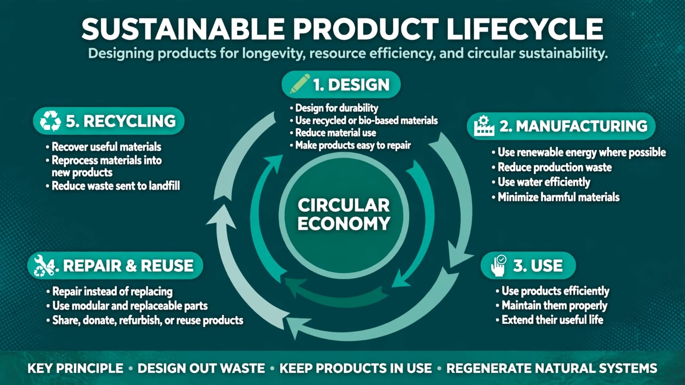

01 • Positive Impact
Why Sustainable Technology Matters

02 • Economic Impact
Innovation Creates Opportunities

03 • Social Impact
Technology for Better Lives

04 • Challenges
Technology Is Not Automatically Sustainable

05 • Responsible Use
From Use to Recycling
